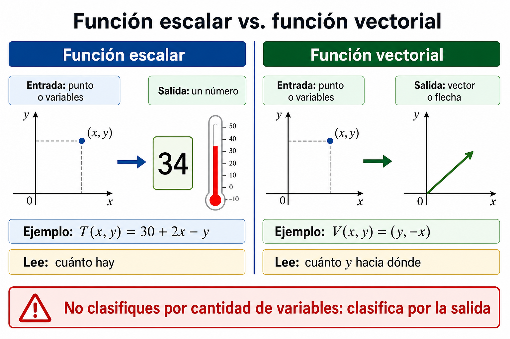

Conceptos
- Función de una variable como presaber.
- Función de varias variables.
- Variable independiente, variable dependiente, entrada y salida.
- Función escalar.
- Función vectorial.
- Dominio y rango.
- Restricción matemática y restricción contextual.
Contenido 1
Bienvenido al primer contenido de Análisis Vectorial. En cursos anteriores, probablemente trabajaste con funciones como y = f(x), donde una variable de entrada produce un valor de salida. Esa idea sigue viva aquí, pero se vuelve más rica: ahora una magnitud puede depender de dos, tres o más variables. Por ejemplo, la presión en un punto del subsuelo puede depender de la posición horizontal, la profundidad y el tiempo; la temperatura de una placa puede depender de dos coordenadas; la velocidad de un fluido no solo tiene tamaño, sino también dirección. En este contenido aprenderás a mirar una expresión matemática antes de manipularla. La pregunta inicial no será '¿qué fórmula aplico?', sino '¿qué entra en esta función, qué sale de ella, dónde tiene sentido y qué representa?'. Esta forma de lectura será la base para derivar, optimizar e integrar más adelante.
Este contenido abre la ruta de Análisis Vectorial. Antes de calcular derivadas parciales, optimizar o integrar sobre regiones, el estudiante necesita reconocer qué tipo de objeto matemático tiene delante: una función escalar, una función vectorial, una entrada de dos o más variables, un dominio restringido o una salida que representa magnitud, posición, dirección o campo.
Antes: Es el punto de entrada de la ruta. Retoma presaberes de funciones de una variable, plano cartesiano, coordenadas, álgebra elemental, intervalos, desigualdades y lectura básica de gráficas.
Después: El siguiente contenido profundiza en dominios, superficies y curvas de nivel con apoyo gráfico. Por eso este contenido deja instaladas las preguntas: ¿cuáles variables entran?, ¿qué sale?, ¿dónde está definida la función? y ¿cómo se interpreta esa salida?
Se parte de la idea conocida: una función asigna a cada entrada permitida una salida. Se recuerda que el dominio indica dónde la función tiene sentido y que el rango describe los valores que puede producir.
Se muestra que una función puede depender de dos o más variables. En lugar de una entrada x, aparecen pares, ternas o vectores de entrada como (x, y) o (x, y, z).
Se explica que una función escalar entrega un número, mientras que una función vectorial entrega un vector. Esta diferencia será decisiva para superficies, campos y trayectorias.
Se estudian restricciones matemáticas como raíces, denominadores y logaritmos, y restricciones contextuales como profundidad positiva, tiempo no negativo o coordenadas dentro de una región física.
Se analizan casos breves y se decide si el modelo es escalar o vectorial, qué variables entran, cuál es la salida y qué interpretación tiene.
El estudiante aplica una matriz sencilla: variables de entrada, salida, tipo de función, dominio, rango esperado y sentido contextual.
Avanza en orden y usa cada imagen como apoyo para explicar con tus propias palabras.
Una función es una regla de asignación. Esta frase parece simple, pero sostiene buena parte del cálculo. Cuando se dice que y = f(x), se afirma que cada valor permitido de x produce un valor de y. La palabra permitido es esencial: no todos los valores imaginables pueden entrar en una función. Si aparece una raíz cuadrada, una división, un logaritmo o una restricción del contexto, el conjunto de entradas se reduce. A ese conjunto de entradas permitidas se le llama dominio.
En cálculo de una variable, la entrada suele representarse por un número real x. La salida también suele ser un número real. Esto permite representar la función mediante una curva en el plano. Sin embargo, muchas situaciones de ingeniería no dependen de una sola variable. La temperatura de una lámina metálica puede cambiar con la coordenada horizontal y la coordenada vertical. La presión en una formación puede variar con la profundidad, la posición y el tiempo. La concentración de una sustancia puede depender de la ubicación espacial. Cuando la realidad exige más de una entrada, el lenguaje de funciones de una variable ya no alcanza.
Una función de varias variables conserva la idea fundamental de asignación, pero amplía la entrada. En lugar de recibir x, recibe un par (x, y), una terna (x, y, z) o un conjunto de variables. Por ejemplo, f(x, y) puede representar la temperatura en el punto (x, y) de una placa. La salida sigue siendo un número si la función es escalar. En ese caso, la función no entrega una flecha ni una lista de componentes: entrega una magnitud.

En una función de varias variables, las variables independientes son las entradas. Si se escribe T(x, y), se está diciendo que T depende de x y de y. El símbolo T puede representar temperatura, pero también podría representar presión, elevación o densidad. Por eso no basta leer letras: hay que leer significado. La misma forma algebraica puede representar fenómenos muy distintos si cambian las unidades, el contexto y la interpretación.
La variable dependiente es la salida. En una función escalar de dos variables, como z = f(x, y), la salida se suele llamar z. Pero z no tiene que ser una altura geométrica. Puede ser una temperatura, una presión o una concentración. Cuando se grafica z = f(x, y), la representación se ve como una superficie en el espacio tridimensional; aun así, la función sigue siendo escalar porque para cada par (x, y) produce un solo número.
Una forma útil de leer cualquier modelo es preguntar: ¿qué valores ingreso?, ¿qué obtiene la función?, ¿qué unidades tienen las entradas?, ¿qué unidades tiene la salida?, ¿hay valores prohibidos?, ¿la salida es un número o un vector? Estas preguntas evitan errores posteriores. Un estudiante puede derivar correctamente una expresión y aun así interpretar mal el resultado si no sabe qué representa cada variable.
Una función escalar de varias variables asigna un número a cada punto de su dominio. Si f(x, y) = x^2 + y^2, cada punto del plano recibe un valor numérico. Ese valor puede interpretarse geométricamente como una altura, pero también puede leerse como energía, distancia cuadrática, presión idealizada o cualquier magnitud que el contexto permita. Lo escalar está en la salida: un solo número.
Las funciones escalares aparecen constantemente en ingeniería. Una función P(x, y, z) puede representar presión en una región tridimensional. Una función rho(x, y, z) puede representar densidad. Una función h(x, y) puede representar elevación de una superficie. En cada caso, la entrada ubica un punto y la salida cuantifica algo en ese punto. Esta estructura será clave para derivadas parciales: cuando se derive con respecto a x, se preguntará cómo cambia la magnitud si x varía y las demás variables se mantienen fijas.
Es importante no confundir la gráfica de una función escalar con su tipo de salida. Una función f(x, y) puede graficarse como una superficie, y una superficie se ve como un objeto tridimensional. Pero la salida de f en cada punto no es un vector tridimensional: es un número. La gráfica usa tres dimensiones para representar dos entradas y una salida escalar. Esa distinción prepara el terreno para entender campos vectoriales más adelante.
Una función vectorial entrega una salida con componentes. Por ejemplo, F(x, y) = (P(x, y), Q(x, y)) asigna a cada punto del plano un vector de dos componentes. Si se trabaja en el espacio, una función vectorial puede tener tres componentes: F(x, y, z) = (P(x, y, z), Q(x, y, z), R(x, y, z)). La salida ya no es una sola magnitud; puede representar velocidad, fuerza, desplazamiento o flujo.
La idea de función vectorial puede aparecer de dos maneras. Una curva parametrizada r(t) = (x(t), y(t), z(t)) recibe un parámetro t y entrega un punto o vector de posición en el espacio. Un campo vectorial F(x, y) recibe un punto y entrega una flecha asociada a ese punto. Ambas son funciones vectoriales, pero cumplen roles distintos. En este primer contenido solo se necesita reconocer que la salida tiene varias componentes y que eso cambia la forma de interpretar el modelo.
Un error común consiste en pensar que toda función con varias variables es vectorial. No es así. f(x, y) = x + y tiene dos variables de entrada, pero una salida escalar. En cambio, F(x, y) = (x + y, x - y) tiene dos variables de entrada y una salida vectorial de dos componentes. La clasificación depende de la salida, no solo de la cantidad de variables de entrada.

El dominio de una función de varias variables es el conjunto de entradas para las que la función está definida. En una variable, el dominio suele ser un intervalo o unión de intervalos. En dos variables, el dominio suele ser una región del plano. En tres variables, puede ser una región del espacio. Esta diferencia exige pensar geométricamente: no solo se buscan números permitidos, sino regiones permitidas.
Las restricciones algebraicas más frecuentes son conocidas. Si hay un denominador, no puede ser cero. Si hay una raíz de índice par, el radicando debe ser mayor o igual que cero. Si hay un logaritmo, el argumento debe ser positivo. En varias variables, estas condiciones se traducen en desigualdades que describen regiones. Por ejemplo, en f(x, y) = sqrt(9 - x^2 - y^2), el dominio exige 9 - x^2 - y^2 >= 0, es decir, x^2 + y^2 <= 9. Esa condición describe un disco de radio 3.
Además del dominio algebraico, existe el dominio contextual. Una fórmula puede admitir ciertos valores, pero el fenómeno puede prohibirlos. Si z representa profundidad medida hacia abajo, quizá se exija z >= 0. Si t representa tiempo, normalmente t >= 0. Si una coordenada describe distancia dentro de una muestra cilíndrica, no cualquier punto del plano tiene sentido. La matemática ofrece un dominio posible; el contexto lo ajusta.
El rango es el conjunto de salidas que la función puede producir. En funciones de varias variables, determinarlo puede ser más difícil que hallar el dominio. Aun así, una lectura inicial del rango ayuda a interpretar el modelo. Si f(x, y) = x^2 + y^2, la salida nunca es negativa. Por tanto, el rango es y >= 0 si no hay restricciones adicionales. Si f(x, y) = sqrt(9 - x^2 - y^2), la salida va de 0 a 3 dentro de su dominio.
En contextos de ingeniería, el rango también debe leerse con cuidado. Una presión negativa podría no tener sentido en cierto modelo; una densidad no debería ser menor que cero; una concentración tiene límites físicos. Si el rango calculado contradice el contexto, puede haber un problema de modelación o una interpretación equivocada de variables.
Para una función vectorial, hablar de rango significa describir el conjunto de vectores que puede producir. Esto puede ser más complejo, pero la idea sigue siendo la misma: no solo importa dónde se evalúa la función, sino qué salidas son posibles. En contenidos posteriores, esta idea será importante para entender campos vectoriales y trayectorias.
En ingeniería, una función no es solo una expresión algebraica. Es una forma de representar una relación entre variables. Si se estudia una propiedad del subsuelo, una función puede aproximar cómo cambia una magnitud con la posición. Si se analiza flujo, un campo vectorial puede representar dirección e intensidad del movimiento. Si se busca optimizar un diseño, una función objetivo puede representar costo, volumen, energía o rendimiento.
El primer paso de la modelación es decidir qué variables importan. Una simplificación puede reducir un fenómeno complejo a dos variables para hacerlo tratable. Otra modelación puede requerir tres variables espaciales y el tiempo. No hay una única forma de modelar; por eso el estudiante debe aprender a justificar sus elecciones. En este contenido no se exige construir modelos avanzados, pero sí leerlos con criterio.
Una buena lectura de modelo incluye unidades. Si x e y son distancias en metros y f(x, y) es temperatura en grados Celsius, entonces una derivada parcial posterior tendrá unidades de grados Celsius por metro. Aunque todavía no se están calculando derivadas, esta conciencia de unidades prepara una interpretación más rigurosa de los resultados futuros.
Clasificar una función no es una tarea menor. Si la función es escalar, se puede pensar en superficies, curvas de nivel, gradiente, optimización e integrales múltiples. Si la función es vectorial, se abren ideas como trayectorias, campos, flujo, trabajo e integrales de línea. En ambos casos, el cálculo que vendrá después depende de saber qué objeto se tiene.
La ruta del curso avanzará desde esta lectura inicial hacia herramientas más potentes. En el Contenido 2, las funciones escalares de dos variables se mirarán mediante dominios, superficies y curvas de nivel. En el Contenido 3, se estudiará cómo se comportan cerca de un punto mediante límites, continuidad y derivadas parciales. En el Contenido 4, el gradiente organizará la dirección de mayor cambio. En el Contenido 5, se optimizarán funciones. Luego se integrarán magnitudes en regiones y se trabajará con campos vectoriales.
Por eso este primer contenido funcióna como una brújula. No entrega todas las técnicas, pero enseña a reconocer el terreno. Antes de avanzar, el estudiante debe poder mirar una expresión como f(x, y), F(x, y), r(t) o P(x, y, z) y explicar qué entra, qué sale, dónde está definida y qué podría representar.
Preguntar si la función recibe un número, un par ordenado, una terna o un parámetro. Ejemplo: f(x, y) recibe dos entradas; r(t) recibe un parámetro; P(x, y, z) recibe tres coordenadas.
Determinar si la salida es un solo número o una lista de componentes. Si es un número, la función es escalar. Si es un vector, la función es vectorial.
Buscar raíces pares, denominadores, logaritmos y expresiones que impongan condiciones. Traducir cada condición a desigualdad o exclusión.
Preguntar si las variables representan tiempo, distancia, profundidad, presión, concentración u otra magnitud que limite los valores posibles.
Expresar el dominio en palabras, desigualdades o región geométrica. En dos variables, intentar leerlo como región del plano.
Estimar qué salidas son posibles. No siempre se necesita una demostración completa al inicio, pero sí una lectura coherente.
Redactar una frase del tipo: 'Esta función recibe una ubicación y devuelve una magnitud escalar', o 'Este campo recibe una ubicación y devuelve una flecha de velocidad'.
La clasificación principal se hace por la salida. Entrada de varias variables con salida numérica: función escalar. Entrada de una o varias variables con salida vectorial: función vectorial. Una gráfica tridimensional de z = f(x, y) no convierte la función en vectorial; solo representa una salida escalar como altura.
Situacion: La temperatura T en una placa rectangular depende de la posición (x, y).
Modelo: T(x, y) = 30 + 2x - y
Analisis: Las entradas son x e y. La salida T es un número que representa temperatura. Por tanto, T es una función escalar de dos variables. Si la placa mide 4 metros por 2 metros, el dominio contextual podría ser 0 <= x <= 4 y 0 <= y <= 2. Aunque la fórmula algebraica aceptaría todos los pares reales, el modelo físico solo tiene sentido dentro de la placa.
Aprendizaje: El dominio contextual puede ser más pequeño que el dominio algebraico.
Situacion: Un fluido se mueve en una región plana y su velocidad depende de la posición.
Modelo: V(x, y) = (y, -x)
Analisis: Las entradas son x e y. La salida tiene dos componentes: una componente horizontal y una vertical. Por tanto, V es una función vectorial. En cada punto del plano, el modelo asigna una flecha. No tendría sentido graficarlo solo como una superficie z = f(x, y); se requiere representar flechas o componentes.
Aprendizaje: Una función vectorial puede interpretarse como campo si asigna un vector a cada punto de una región.
Situacion: En un modelo simplificado, la presión depende de la profundidad z.
Modelo: P(z) = P0 + rho g z
Analisis: La función tiene una sola variable de entrada, z, y una salida escalar P. Aunque pertenece a un contexto espacial, no es función de varias variables si solo depende de z. Si el modelo se ampliara a P(x, y, z), entonces sí sería una función escalar de tres variables.
Aprendizaje: El contexto espacial no basta; la cantidad de variables de entrada se lee en el modelo.
Situacion: La posición de una partícula se describe con el tiempo.
Modelo: r(t) = (cos t, sin t, t)
Analisis: La entrada es t. La salida tiene tres componentes. Por tanto, r es una función vectorial de una variable. Describe una curva en el espacio. Aunque solo tenga una entrada, la salida vectorial hace que sea vectorial.
Aprendizaje: Una función puede ser vectorial aunque tenga una sola variable de entrada.
Nivel: Universitario introductorio
Contexto: Una propiedad escalar de una superficie se aproxima mediante una función de dos variables.
Enunciado: Considere f(x, y) = sqrt(16 - x^2 - y^2). Clasifique la función, determine su dominio y describa una interpretación posible.
La función recibe dos entradas, x e y. Para cada par permitido, devuelve el valor sqrt(16 - x^2 - y^2), que es un número.
Como la salida es un número, f es una función escalar de dos variables.
La raíz cuadrada exige que 16 - x^2 - y^2 >= 0. Esto equivale a x^2 + y^2 <= 16.
El dominio es el disco cerrado de radio 4 centrado en el origen: todos los puntos (x, y) tales que x^2 + y^2 <= 16.

La función puede representar la altura de una semiesfera superior de radio 4 sobre el plano xy. También podría representar una magnitud máxima en el centro que disminuye hacia el borde, siempre que el contexto lo permita.
Resultado: Función escalar de dos variables, con dominio x^2 + y^2 <= 16.
Verificacion: En el punto (0, 0), f = 4. En el punto (4, 0), f = 0. En el punto (5, 0), la expresión dentro de la raíz es negativa, por lo que no pertenece al dominio real.
Transferencia: Este tipo de dominio circular será útil para integrales dobles en coordenadas polares.
Nivel: Universitario introductorio
Contexto: Un modelo simplificado describe movimiento horizontal de fluido en una sección plana.
Enunciado: Considere F(x, y) = (2x, -y). Clasifique la función, identifique entradas, salida y explique qué podría representar.
La función recibe el par (x, y), es decir, una ubicación en el plano.
La salida es (2x, -y), un vector con dos componentes.
Como la salida es vectorial, F es una función vectorial de dos variables. Si se interpreta punto por punto, es un campo vectorial.

La componente horizontal crece con x; la componente vertical apunta en sentido contrario a y. En puntos con y positivo, la componente vertical es negativa; en puntos con y negativo, es positiva.
Podría representar una velocidad idealizada donde el movimiento horizontal aumenta al alejarse hacia la derecha y el componente vertical tiende a dirigir el movimiento hacia el eje x.
Resultado: Función vectorial de dos variables; puede interpretarse como campo vectorial plano.
Verificacion: En (1, 2), F(1, 2) = (2, -2). En (-1, 2), F(-1, 2) = (-2, -2). La salida no es una altura sino una flecha.
Transferencia: Esta lectura será necesaria en el Contenido 7 para integrales de línea y trabajo de campos vectoriales.
Nivel: Universitario introductorio con lectura de contexto
Contexto: Una función estima una propiedad C en una muestra rectangular de laboratorio.
Enunciado: Sea C(x, y) = ln(10 - x - 2y). Algebraicamente, determine el dominio. Luego ajuste el dominio si la muestra solo existe para 0 <= x <= 3 y 0 <= y <= 2.
C entrega un número, por lo que es una función escalar de dos variables.
El argumento del logaritmo debe ser positivo: 10 - x - 2y > 0.
La desigualdad equivale a x + 2y < 10. Algebraicamente, el dominio es el semiplano por debajo de la recta x + 2y = 10, sin incluir la recta.
La muestra solo existe para 0 <= x <= 3 y 0 <= y <= 2. Por tanto, el dominio físico es la intersección del rectángulo con x + 2y < 10.
Dentro del rectángulo, el valor máximo de x + 2y ocurre en (3, 2), donde x + 2y = 7. Como 7 < 10, todo el rectángulo cumple la condición. En este caso, el dominio contextual final es el rectángulo completo.
Resultado: Dominio algebraico: x + 2y < 10. Dominio contextual final: 0 <= x <= 3 y 0 <= y <= 2.
Verificacion: La restricción física fue más fuerte que la algebraica dentro de la muestra.
Transferencia: En problemas de ingeniería, el dominio real casi siempre combina matemáticas y contexto.
Si la salida es un solo número, la función es escalar. Si la salida tiene componentes, es vectorial. Luego revisa dominio y contexto.
Comprender que una función se lee por su entrada, salida, dominio, rango y sentido contextual.
Clasificar cinco situaciones o expresiones como función escalar o vectorial. Para cada una, identificar variables de entrada, salida, dominio posible, restricción y una interpretación breve.
Una tabla argumentada en Moodle con cinco filas, una por función o situación, y una conclusión de máximo dos párrafos sobre la diferencia entre salida escalar y salida vectorial.
Tiempo estimado: 3 a 4 horas de trabajo autónomo.
Una función de varias variables amplía la idea conocida de función: puede recibir dos, tres o más entradas. Si produce un número, es escalar; si produce componentes, es vectorial. El dominio indica dónde la función está definida y el rango indica qué salidas puede producir. En ingeniería, leer entradas, salidas y restricciones es tan importante como calcular.
Este aprendizaje será usado inmediatamente para representar dominios y superficies. Más adelante permitirá comprender gradiente, optimización, integrales múltiples, campos vectoriales e integrales de línea.
Pregunta para pensar: Cuando recibes una fórmula nueva, ¿qué debes saber de ella antes de intentar derivarla o integrarla?
En el Contenido 2 estudiarás cómo se ven y se interpretan los dominios, superficies y curvas de nivel de funciones escalares de dos variables.